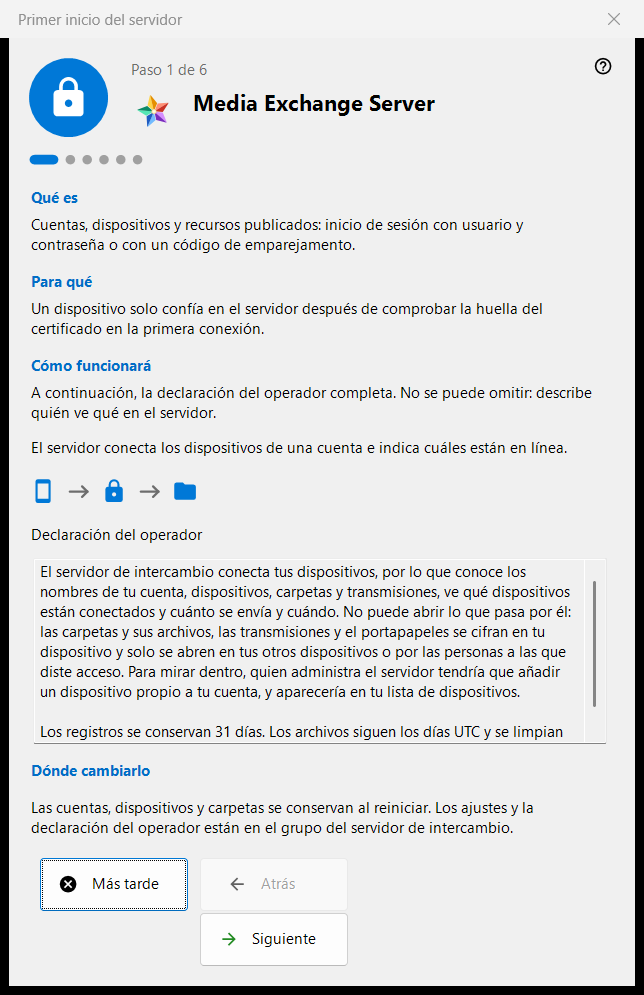
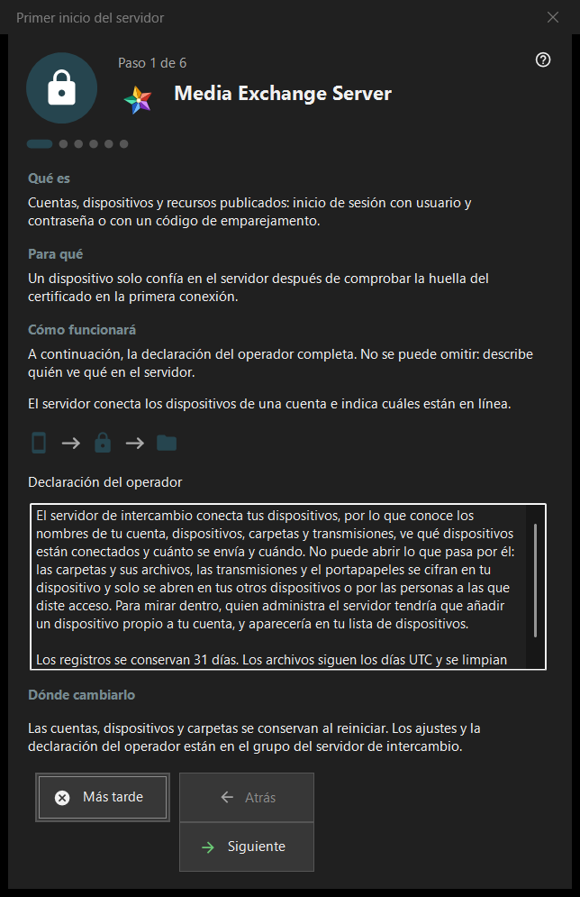

Primer inicio del servidor
Para qué sirve
Una guía de primer inicio para el grupo del servidor de intercambio de Share Manager. Explica en qué se convierte el equipo, muestra la declaración del operador, fija los puertos, la dirección para los clientes y la primera cuenta, y termina con el estado del servidor. Se abre solo cuando el servidor de intercambio está presente y activado.


En este orden
- Lee la declaración del operador en la primera página.
- Revisa los puertos y la regla del firewall.
- En una edición de servidor sin servicio, decide sobre el servicio de Windows.
- Rellena la dirección para los clientes.
- Crea la primera cuenta.
- Comprueba la huella del certificado y pulsa «Finalizar».
Los elementos
Páginas y botones
El pie muestra «Paso N de M»; «Atrás», «Siguiente» y «Más tarde» funcionan como en cualquier asistente, y «Finalizar» en la última página abre el grupo del servidor de intercambio del gestor. Se puede omitir una página sin cambios: el servidor queda entonces apagado o como estaba.
Declaración del operador
La declaración completa de quién ve qué en el servidor. No se puede omitir. El servidor conecta los dispositivos de una cuenta e informa de cuáles están en línea.
Puertos y firewall
Un puerto de encuentro para los dispositivos y un intervalo de puertos para clientes de terceros. Los dispositivos deben conocer el puerto del servidor, así que los cambios solo se aplican a los códigos nuevos. La regla del firewall pertenece al programa, por lo que un cambio de puerto no necesita una regla nueva. Estos valores están en el grupo del servidor de intercambio.
Servicio de Windows
Solo se muestra en una edición de servidor en la que el servicio aún no existe. Un servicio mantiene el servidor disponible cuando nadie ha iniciado sesión. La casilla solo recuerda tu consentimiento: el servicio se registra después de crear la primera cuenta, con una sola solicitud de elevación, y antes no se instala nada. «Registrar como servicio..» en el grupo de intercambio hace lo mismo más adelante.
Dirección para los clientes
«Dirección para los clientes (host:puerto):» es lo que usan los demás dispositivos para llegar a este equipo. «Sugerir una dirección local» rellena el campo solo cuando lo pulsas. Una dirección vacía mantiene válido un primer inicio puramente local, pero oculta las emisiones y las conexiones de carpetas a los demás dispositivos.
Primera cuenta
La cuenta con la que inicia sesión el primer dispositivo. Elige «Generar una contraseña» o «Introducir tu contraseña»; «Conectar este PC a la cuenta» une este equipo a la cuenta. «Siguiente» crea la cuenta, inicia el servidor y comprueba el certificado. La contraseña se muestra una sola vez, en el cuadro de diálogo existente, y no se guarda en este PC. Un fallo posterior a la creación de la cuenta no la elimina.
El servidor está listo
La última página indica dónde quedan registrados la dirección, el usuario y la huella del certificado y ofrece «Copiar huella» y «Cadena de conexión y código QR..». Un dispositivo confía en el servidor después de comprobar la huella en su primera conexión. Los enlaces «Conectar un teléfono (ayuda)» y «Publicar la primera carpeta (ayuda)» llevan a las páginas de ayuda correspondientes.
Ajustes del gestor · Ajustes de uso compartido SFTP · Ajustes del servidor de intercambio